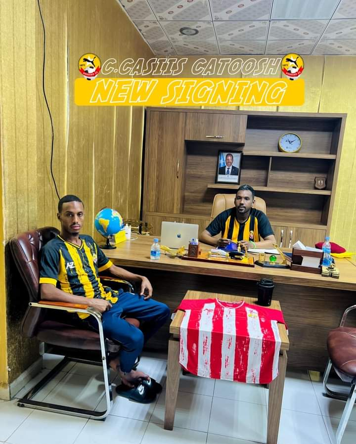

kooxda kubada cagta horsed ayaa laso wareegtay kubad sameeyaha xulka qaranka iyo laacibkii hore ee kooxda dowlada hoose muqdisho city club aduun lacaged gaaraya 5m.sh.so lacibka ayaa sanadkan kula so guulesyta naadiga MCC horyaalka heerka kowaad ee dalka iyo sido kale koobka general da'uud si la mid ah super cupka dalka xili uu sheegay inu horseed ka cawin doono in sanadkan ay ku guuleysato seddexley koob ah.
Naadiga Horseed SC ayaa heshiis la gaaray Ciyaaryahaan CabdiCasiis Maxamed Catoosh wuxuuna si rasmi ah kamid noqday Naadiga Horseed 'Cawo iyo Maalin'. asigoo kaga so biiray naadiga muqdisho city club Horumar wacan ayaan kuu rajaynaynaa, Welcome to 'Cawo iyo Maalin.